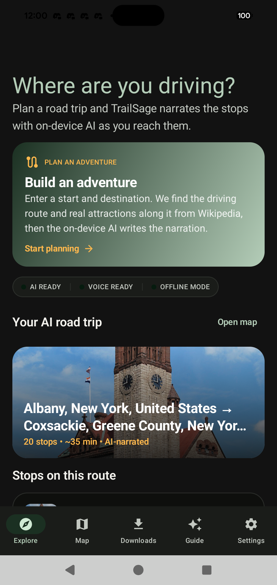
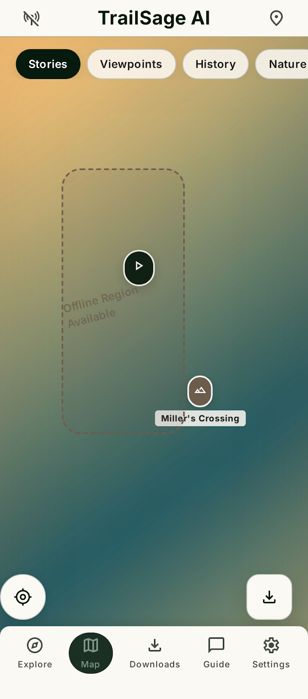
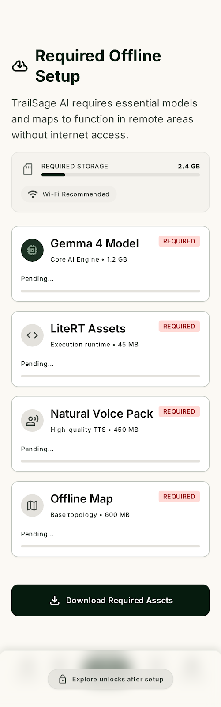
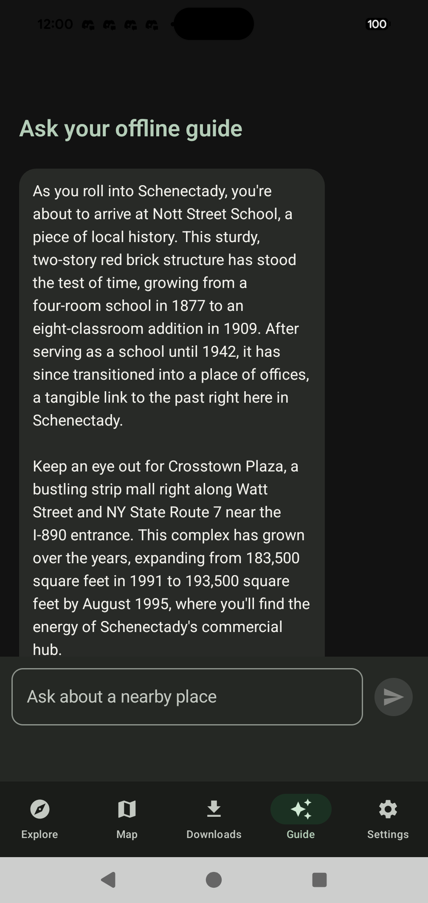
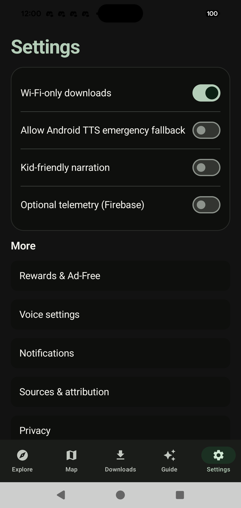

Your private road trip storyteller.
TrailSage AI is an offline-first GPS audio tour guide for Android. It runs a local LLM, neural voices, and offline maps completely on your device. Discover stories, geology, and local lore without any internet connection.

Built for the remote highways
No cell service? No problem. Everything operates 100% locally on your phone.
On-Device RAG AI
Powered by Google Gemma 2B and LiteRT-LM. Retrieves rich driving context and answers custom tour queries directly on your device using a local knowledge graph, returning clean context-sourced summaries.
Neural TTS Voice Playback
Integrated with the Sherpa-ONNX native engine and Piper/VITS neural voices. Experience highly expressive, natural human voice tours instead of basic robotic system text-to-speech fallback.
Offline Maps (PMTiles)
Utilizes offline-first OpenStreetMap vector data compiled into PMTiles extracts. Render detailed terrain, pathways, and roads locally with full zoom capabilities in remote valleys.
GPS Triggers & Bearings
Smart radius and bearing calculations. The audio player triggers historical narration automatically as you drive into the trigger zone in the exact direction of travel.
Open Pack Builder
Includes a Python tour-pack builder tool that scrapes Wikimedia and OpenStreetMap data to generate custom tour-packages with local maps, narration scripts, and RAG contexts.
Privacy by Design
No cloud AI APIs and no selling of your data. Your location and trip history stay on your device. Optional Firebase diagnostics are strictly opt-in, and an optional rewards-based ad-free tier is available.
Anonymous Trip Sharing
Share your curated road trip itineraries with friends. Generates a unique, privacy-safe sharing link that opens in any browser with interactive maps, stop summaries, and directions, or imports back directly into TrailSage AI.
Inside the Interface
Crafted using Compose Material 3 design systems and optimized for driving safety.




See TrailSage AI in Action
A 40-second tour of planning a trip, navigating offline, and hearing the road's stories.
How Trip Sharing Works
Curated an amazing route? Share your adventure with friends in seconds without creating any account.
Technical Architecture
Engineered to bypass cloud API limits, cell network latency, and high subscription fees.
| Component | Technology Details & APIs |
|---|---|
| Android Development | Built natively using Kotlin 2.2, Jetpack Compose M3, and structured around Hilt DI, Room DB, WorkManager, Coroutine Flows, and DataStore. |
| On-Device LLM AI | Google Gemma 2B E2B quantized model running on-device via the LiteRT-LM Android SDK for robust offline RAG capability. |
| Offline Speech Synthesis | Sherpa-ONNX v1.13.2 native library coupled with highly expressive Piper VITS models for fully offline, natural text-to-speech rendering. |
| Vector Map Engine | MapLibre GL Android loading and rendering compiled offline PMTiles vector extracts derived from OpenStreetMap coordinates. |
| Tour Pack Schema | ZIP archives structured with geo-coordinates, triggers, markdown narrations, and RAG context maps. Assets are verified via SHA-256 checksum manifests before load. |
| Privacy & Telemetry | Strict opt-in. Firebase Crashlytics, Analytics, and Performance Monitoring initialization are dynamically disabled by default until developer/user permission gate passes. |